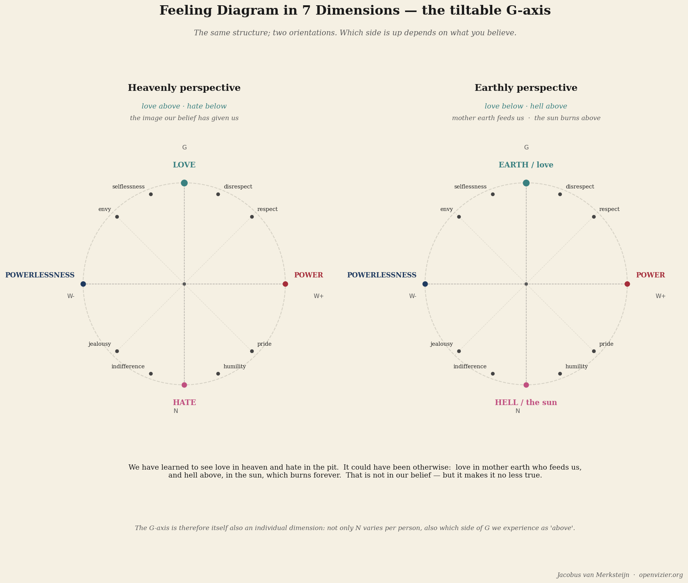

The seven dimensions
The 7D model of human feeling
Theory · 14 min read

By Jacobus van Merksteijn
Imagine drawing a map of a person's inner life. Not a psychological typology, not a list of traits or diagnoses, but a real map — with spatial relationships, with axes and distances, with regions that border each other and regions far apart. A topography of the emotional life.
That is what the 7-dimensional feeling model attempts. It is a map, not of feelings themselves — feelings resist being pinned down — but of the structural relationships between feelings. How do pride and jealousy relate to each other? What is the connection between power and fear? When does love become hate, and via which route? Those questions are not philosophically decorative. They are practical. Whoever knows the map navigates differently.
I explain it here for the general reader, without the mathematical underpinning. The full version is in the foundational text I have worked out separately. This is the introduction — the orientation for those who want to understand the structure before the details follow.
The basic form: an oval standing upright in space
The basic shape of the model is an oval standing upright. Not lying flat on a surface, but standing up, like a vertebra. The oval has a top and a bottom, a left and a right, and a depth — the axis that goes in and out of the image.
The top point of the oval is love. The bottom point is hate. That is the most fundamental structural property of the model: love and hate are not simple opposites sitting on either side of a line. They are the two extremes of one continuous arc. And there are two paths from love to hate: via the right side, and via the left side.
That is the most fundamental structural property of the model: love and hate are not simple opposites sitting on either side of a line.
Those two paths describe two fundamentally different psychological worlds.
The right arc: the real side
The right arc runs from love (top) via the rightmost point down to hate (bottom). The feelings on this arc are grounded in a real relationship with the outside world. Real, in the terminology of this model, means: the feeling has its origin in something that actually exists, outside you.
Just below love on the right arc stands respect. Not the abstract respect of a social courtesy, but the concrete experience of being recognised in your own worth by another human being. Respect is a real feeling: you cannot conjure it yourself if it isn't there. It needs a counterpart.
A little further down stands pride. The inner recognition of one's own achievement or quality, in relation to the outside world. Pride differs from narcissism: pride is grounded in what has actually been achieved. Narcissism is a story that drifts loose from reality.
At the outermost point of the right arc — the most rightward point, at mid-height — stands power. The capacity to be effective, to make things happen, to exert influence. Power in this model is neutral: it describes a position in the structure, not a moral judgement. Power can be used for good or bad ends. The position is the same.
Beyond power, on the side descending toward hate, stands jealousy. Jealousy is the real perception that someone else has something you wish you had but don't. It is real because it is grounded in a factually observed difference. It has an active component: jealousy doesn't want the other person to lose what they have — it wants to have it too.
Just above hate stands envy. And here the distinction between jealousy and envy becomes crucial, because in everyday language they are used interchangeably. Envy doesn't want you to have it yourself. Envy wants the other person not to have it either. It is the desire for the other's downfall, independent of personal gain. Envy carries hate within it as potential.
And then hate, all the way at the bottom. Not as the opposite of love in the childish sense — I love you, I hate you — but as the state of maximum negative connection with reality outside oneself. The active rejection. The destructive orientation.
The left arc: the unreal side
The left arc runs parallel to the right, but on the other side. The feelings here are the unreal counterparts of the real feelings on the right arc. Unreal does not mean: not genuine, not felt, less valid. It means: grounded in an inner state that can exist independently of the factual outside world.
Just below love on the left arc stands disrespect. This word deserves attention. Disrespect is not the absence of respect from the outside — that would be a real feeling, the situation where someone genuinely doesn't respect you. Disrespect as an unreal feeling is the deep experience of oneself as not worthy of respect. This feeling can exist regardless of what others think of you. People who are respected by everyone and yet feel fundamentally inferior know this feeling from the inside.
A little further down stands non-pride. The experience of inadequacy that is detached from what one has actually achieved. In its extreme form: deep shame — not as a moral emotion but as the direct inner knowledge that one is fundamentally lacking.
At the outermost point of the left arc stands powerlessness, and it shares that position with fear. In this model, powerlessness and fear are two aspects of the same phenomenon: powerlessness is the structural position — the feeling that you can't. Fear is the temporal component — the experience of the threatening thing that powerlessness cannot ward off. Whoever structurally experiences powerlessness experiences the world as threatening. That is fear.
In this model, powerlessness and fear are two aspects of the same phenomenon: powerlessness is the structural position — the feeling that you can't.
Beyond the middle, moving toward hate, stands non-jealousy. This is a subtle and rarely discussed feeling: not the desire for what someone else has, but the inability to desire — the inner state of being numbed to one's own lack. The person who cannot feel their own jealousy has lost the connection to their own desire. That is not a sign of saintliness. It is a sign of withdrawal.
Then non-envy, just above hate. Not the active wish that the other should fall, but being numbed to the other's fall. No longer being touched by injustice. It no longer mattering.
And hate, at the bottom, shared with the right arc. Love at the top connects the two arcs. Hate at the bottom connects them too. At the extreme points, the distinction between real and unreal disappears.
The three axes
The oval floats in a three-dimensional space defined by three axes.
The G-axis runs vertically: from love above to hate below in the standard orientation. G stands for magnitude, for the intensity dimension. The higher on the G-axis, the more the feeling moves in the direction of love. The lower, the more it converges toward hate.
The W-axis runs horizontally: real to the right, unreal to the left. W stands for value — the question of whether a feeling is grounded in the outside world or the inner world. At the rightmost point stands power. At the leftmost point stand powerlessness and fear. They are each other's mirror images — not qualitative opposites but structurally isomorphic. Whoever has experienced power knows what powerlessness feels like. Not through reasoning but through structural proximity.
The N-axis runs in depth — perpendicular to the plane spanned by the G-axis and W-axis, as it were going into and out of the image. In every person, the complete oval structure sits at a different position along the N-axis. The N-axis is the individual dimension. Two people who use the same word — jealousy, pride, fear, love — experience the corresponding feeling from a completely different biography. The jealousy of a child growing up in poverty and the jealousy of a child in abundance occupy the same geometric position in the oval, but a completely different N-position. They are structurally identical but biographically radically different.
The N-axis makes the model dynamic: a person moves along the N-axis throughout life. Experiences, learning processes, traumas, recovery — all of this shifts the N-position. The structure of the oval remains; the person's position within it shifts.
The diagonal empty-functions
The most surprising element of the model is the diagonal connections — the empty-functions. They do not run horizontally from right to left but diagonally: from a point on the right arc, straight through the centre of the oval, to a point on the left arc that is not at the same height.
The centre of the oval is the zero point — the point of maximum emptiness, inner silence in its extreme form: not the silence that sustains, but the silence that indicates there is no longer any contact with the emotional life.
The diagonal pairs are: respect (upper right) through the centre to non-envy (lower left). Pride (upper right) through the centre to non-jealousy (lower left). Jealousy (lower right) through the centre to non-pride (upper left). Envy (lower right) through the centre to disrespect (upper left).
The diagonal pairs are: respect (upper right) through the centre to non-envy (lower left).
What does this mean? It describes the state that arises when a feeling is discharged through the zero point. Loveless sits in hate — not the absence of love but its active negation, the hate that has travelled through the zero point. Powerless sits in fear. Respectless — in the topological sense — describes a state of numbness toward the other that has travelled through the centre of respect.
The distinction between disrespect (the horizontal counterpart) and respectless (the diagonal empty-function) is not semantic hairsplitting. It is fundamental. Disrespect is an active feeling: the direct inner perception of not being worthy of respect. Respectless is the state of having no contact with the feeling of respect at all — an erosion, not a mirroring. Both produce behaviour that the outside world calls "disrespectful," but the internal architecture differs completely, and with it the appropriate response.
The tiltable G-axis: heavenly or earthly?

There is a property of the model that is most radical, and which I do not want to pass over in silence: the G-axis is tiltable.
In the standard orientation, love is above and hate is below. That is the heavenly perspective — the Western, Christianly informed orientation. God is above, evil is below. Light goes upward, darkness downward. That ordering is so deeply rooted that it feels self-evident, as if love and above are non-contingently linked.
But an earthly perspective also exists. In that perspective, love is below — as mother earth who carries and feeds us, the ground we stand on, the source of all life. And hate is above — as the sun that scorches and burns whatever is exposed to it too long. The earth nourishes. The sun burns.
That is not relativism. It is topology. The same structure can exist in multiple orientations without the structure itself changing. What changes is the meaning that a culture or individual assigns to the positions. And that meaning is itself a psychological fact about the person — something that can be examined, understood, and if necessary corrected.
It is not only cultures that orient themselves to the G-axis in their own way. Individuals do too. For someone raised in a tradition where the love of the earth is central — the farmer who knows her land, the fisherman who knows his sea — the earthly orientation of the G-axis is immediately recognisable. For someone raised in an urban religious tradition, the heavenly orientation is self-evident. Both are valid. The G-axis is itself an individual variable. That makes the model radically personal in character.
What the map yields
A map is useful when it shows you where you are and how to get from A to B. The topography of emotional life does the same. It shows that powerlessness and jealousy are not the same kind of feeling, even if both are painful. It shows that envy and jealousy are structurally related but fundamentally different. It makes visible the distinction between a feeling that is grounded in reality and a feeling that is not — a distinction that has been entirely lost in everyday language.
And it provides the language for the conversation that we as a society need to have: not the conversation about "which feelings are good and which are bad" — that question is moralistic and leads nowhere — but the conversation about where a feeling comes from, via which route it got there, and what it asks. That conversation is only possible when there is a shared map. This is that map.
For further reading: the 7-dimensional feeling diagram is fully worked out, including the mathematical topology and therapeutic applications, in the work Denkbasis voor een 7-dimensionaal gevoelsmodel. The pedagogical elaboration — what the seven dimensions mean for children's development at what age — is in the Manifest voor onderwijs en opvoeding. Both are available for download on openvizier.org.
The pedagogical elaboration — what the seven dimensions mean for children's development at what age — is in the Manifest voor onderwijs en opvoeding.
The Seven Dimensions of Feeling
Imagine a real map of a person's inner life — not a typology, but a topography, with axes, distances, and regions that border each other.
"It is a map not of feelings themselves, but of the structural relationships between feelings. Whoever knows the map navigates differently."
An oval standing upright
The basic shape is an oval standing up, like a vertebra. Love at the top, hate at the bottom. They are not simple opposites on either side of a line — they are the two extremes of one continuous arc. And there are two paths from love to hate: the right side and the left side. Those two paths describe two fundamentally different psychological worlds.
The real arc and the unreal arc
The right arc holds the real feelings, grounded in something that actually exists outside you: respect, pride, power, jealousy, envy. Jealousy wants to have what the other has; envy wants the other not to have it either. The distinction matters, because everyday language confuses them.
The left arc holds the unreal counterparts — grounded in an inner state that can exist regardless of the outside world: disrespect, non-pride, powerlessness and fear, non-jealousy, non-envy. People respected by everyone who still feel fundamentally inferior know the left side from the inside.
Three axes
The G-axis runs vertically — intensity, from love above to hate below. The W-axis runs horizontally — real to the right, unreal to the left, with power and powerlessness as mirror images. The N-axis runs in depth: the individual dimension. Two people who say "jealousy" experience the same geometric position from completely different biographies. The N-axis makes the model dynamic — a person moves along it throughout life.
The diagonal empty-functions run through the centre — the zero point of maximum emptiness. They describe the state when a feeling is discharged through that silence: not mirroring, but erosion. Contact with the feeling lost entirely.
The tiltable G-axis
The most radical property: the G-axis can tilt. In the heavenly orientation love is above, hate below — God above, evil below. But an earthly orientation also exists: love below, as mother earth who carries and feeds; hate above, as the sun that scorches. That is not relativism. It is topology. The same structure in multiple orientations, valid for cultures and individuals alike.
Close
A map is useful when it shows where you are and how to get from A to B. This one shows that powerlessness and jealousy are not the same kind of feeling, that envy and jealousy are related but distinct, that a feeling grounded in reality differs from one that is not.
"Not which feelings are good or bad — that question is moralistic and leads nowhere. But where a feeling comes from, by which route, and what it asks. That conversation needs a shared map. This is that map."